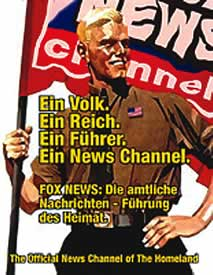

Ein Louis, kein NATO
vrijdag 20 juni 2003 | Zomaar
Ik vind het ondenkbaar dat Louis Michel zijn ambt als minister van Buitenlandse zaken zou verderzetten. Deze bombastische clown heeft lang genoeg het geweten van de wereld gespeeld! Vanmorgen zat ik dan ook breed te glunderen in de auto toen ik het bericht hoorde dat Antwerpse N-VA-bestuurslid Bart De Wever hem een koekje van eigen deeg had voorgeschoteld. Michel vindt de aanklacht tegen zijn persoon ‘volstrekt belachelijk’. Maar Louis toch! Dat denken die Amerikanen en de rest van de wereld ook van uw genocidewet! Overboord met die juridische kanker! Ik hoor net op de radio dat de Amerikanen nu zelfs overwegen de Antwerpse haven te mijden! In plaats van ons kleine — maar politiek-economisch erg belangrijke — landje zo voor schut te zetten, werk je beter aan de mensenrechten binnen het internationale rechtskader.
Op het domme gezicht past de gebalde vuist: korte metten met Michel. Zoveel is duidelijk. Toch voelt een mens ook aan dat iets niet pluis is in de relatie tussen Amerika en de rest van de wereld. Zij bepalen de regels van het spel. Wie daar van afwijkt, speelt met vuur. Is dit een nieuw gegeven in de wereldgeschiedenis? Volgens sommigen niet. In een interview legt professor Richard Falk uit wat hij bedoelt met Early Signs of Fascism.

Fred op 20 juni 2003
Ik vind dat allemaal maar beangstigend. Amerika begint zich echt te gedragen als een alleenheerser over de wereld. De oppermacht die zijn wil en zijn kijk op de wereld oplegt aan iedereen die zich niet “goed gedraagd”. Het wordt dringend tijd dat Europa zich eindelijk eens verenigt en een dam vormt tegen die arrogantie. Ze is op dit moment de enige mogendheid die daartoe in staat is. En het ziet er op dat vlak niet al te goed uit…